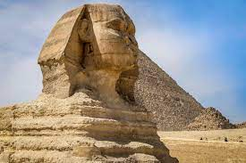
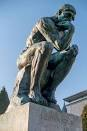
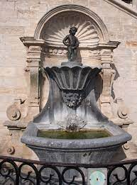
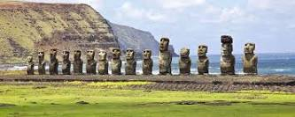
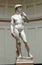

Le Sphinx de Gizeh
Hauteur : 20 m
Dimensions : 20 m x 19 m x 73 m
Lieu d'exposition : Plateau de Gizeh
Matériau : Calcaire
Support : Calcaire
Sujet : Sphinx
Période : Ancien Empire
Le Sphinx est l’un des plus grands mystères de tous les temps. Les archéologues ont beaucoup spéculé sur son origine, sa date de création ou sa fonction. On pense qu'il a été créé vers l'an 2500 environ, dans le cadre du complexe funéraire de Khafre, pour être le gardien pour protéger sa tombe. On a souvent spéculé sur la disparition de son nez, visiblement usé, accusant même Napoléon de l'avoir détruit ! Cette hypothèse a été réduite à néant lors de la découverte des dessins réalisés par un explorateur avant la naissance de Napoléon.
Le Penseur
Lieu d'exposition : Musée Rodin
Supports : Bronze, Marbre
Création : 1902
Dimensions : 1,89 m x 98 cm x 1,4 m
Sujet : Dante Alighieri
Période : Réalisme
Créé dès 1880 dans sa taille d’origine, environ 70 cm, pour orner le tympan de La Porte de l’Enfer, Le Penseur était alors intitulé Le Poète : il représentait Dante, l’auteur de La Divine Comédie qui avait inspiré La Porte, penché en avant pour observer les cercles de l’Enfer en méditant sur son œuvre. Le Penseur était donc initialement à la fois un être au corps torturé, presque un damné, et un homme à l’esprit libre, décidé à transcender sa souffrance par la poésie. Pour sa pose, cette figure doit beaucoup à l'Ugolin de Jean-Baptiste Carpeaux (1861, musée d'Orsay, Paris) et au portrait assis de Laurent de Médicis sculpté par Michel-Ange (1526-1531, Chapelle des Médicis, Église San Lorenzo, Florence).
Le Manneken Piss

Artiste Jérôme Duquesnoy l'Ancien
Date avant 1451 : version originale 1619 : version actuelle
Type Bronze
Technique Sculpture
Hauteur 55,5 cm
Pendant Jeanneke Pis
Localisation Bruxelles (Belgique)
Manneken-Pis , signifiant « le petit homme [qui] pisse » en bruxellois, est une fontaine sous la forme d'une statue en bronze de 55,5 centimètres de hauteur2,3 (61 cm avec le socle4) qui représente un petit garçon nu en train d'uriner. Elle est située au cœur de Bruxelles, à deux pas de la Grand-Place, à l'intersection de la rue de l'Étuve et de la rue du Chêne. Depuis 1965, la statuette présente sur place est une copie à l'identique de celle conçue en 1619-1620 qui est précieusement conservée au Musée de la Ville de Bruxelles5 situé dans la Maison du Roi. Manneken-Pis est le symbole le plus connu des Bruxellois, il personnifie aussi leur sens de l'humour (la zwanze en bruxellois) et leur indépendance d'esprit.
La Statue de la Liberté

Type Statue
Partie de Monument national de la Statue de la Liberté, Liberty Island
Orientation Sud-est
Style Architecture néoclassique
Architecte Eugène Viollet-le-Duc
Ingénieur Gustave Eiffel Drapeau de la France France
Sculpteur Auguste Bartholdi
Matériau Feuille d'or, piédestal en béton et granite, revêtement en cuivre, structure en acier
Construction 1886
Dédicace 28 octobre 1886
Commanditaire Édouard Lefebvre de Laboulaye
Hauteur 46,05 m de haut, sans le socle, 93 m socle compris (le socle fait 46,95 m)
National Park Service
La Statue de la Liberté, immense statue creuse constituée de fines plaques de cuivre repoussé sur une carcasse en acier, se dresse sur une île à l’entrée du port de New York. Elle fut conçue à Paris par le sculpteur français Frédéric Bartholdi en collaboration avec l’ingénieur français Gustave Eiffel, et fut offerte par la France pour le centenaire de l’indépendance américaine en 1876. Sa conception et sa construction ont été reconnues à l’époque comme l’une des grandes prouesses techniques du XIXe siècle, saluée comme associant l’art à la technique. Du haut de son piédestal conçu par l’architecte américain Richard Morris Hunt, la statue a accueilli des millions d'immigrants aux États-Unis depuis son inauguration en 1886.
La Vénus de Milo

Artiste : Alexandros d'Antioche
Lieu d'exposition : Musée du Louvre
Support : Marbre
Dimensions : 202 centimètres (hauteur)
Conservation : Département des antiquités grecques, étrusques et romaines du musée du Louvre, Paris
Culture : Époque hellénistique, Grèce antique
Date de découverte : 1820
Découverte en 1820 sur l’île grecque de Melos (ou Milo), dans l’archipel des Cyclades, à l’emplacement de ce qui était peut-être un gymnase antique, la « Vénus de Milo » est une statue de marbre en ronde–bosse (développée en trois dimensions et posée sur un socle) mesurant 2,02 mètres de haut et pesant près d’une tonne. Elle représente une jeune femme aux cheveux attachés, à la poitrine dénudée, son vêtement tombant en plis serrés sur ses hanches et ses jambes. La statue a été retrouvée sans bras. En l’absence d’attributs, son identification n’est pas sûre : s’agit-il de Vénus, déesse de l’amour ou d’Amphitrite, divinité marine adorée sur l’île où la statue fut découverte ? D’auteur inconnu, la Vénus de Milo est une œuvre de l’époque hellénistique (IIè siècle avant J.-C.). Exposée au Louvre dès 1821, elle est aujourd’hui, avec la Joconde et la Victoire de Samothrace, une des trois figures de femme les plus célèbres du musée.
Les Moaï
Les moai de l’île de Pâques sont uniques au monde et constituent, à eux seuls, une bonne raison de séjourner à Rapa Nui.
Il y a 887 moai recensés sur l’île. Ce sont des monolithes en pierre volcanique, basalte, trachyte ou tuf volcanique.
Ils mesurent entre 2 mètres pour les plus petits, jusqu’à 20 mètres pour les plus hauts (80 tonnes).
La majorité des statues reposent encore dans les trois carrières d’extraction, en position couchée.
La plus grande est celle de Rano Raraku avec 400 moai de toutes tailles. Il existe aussi de nombreux sites où, au cours de votre
séjour à l’île de Pâques, vous pourrez admirer les moai debout.
Les plus célèbres sont Ahu Tongariki présentant un alignement de 15 statues, et Ahu Akivi avec ses 7 moai tournant le dos à l’océan.
Tous les secrets des moai n’ont pas encore été percés. Les étapes de leur construction, jusqu’à leur déplacement sur les
lieux de culte, génèrent encore des débats entre les archéologues. Nous vous proposons lors de votre voyage sur l’île que
Pâque de tenter d’en découvrir les mystères.
David
Artiste : Michel-Ange
Lieu d'exposition : Galerie de l'Académie (depuis 1873)
Création : 1501–1504
Support : Marbre de Carrare
Sujet : David
Périodes : Renaissance, Renaissance italienne, Haute Renaissance
Genre : Art cinétique
L'histoire du David commence par un bloc de pierre amené à Florence en bâteau à travers la Méditerranée,
puis l'Arno de la carrière Fantiscritti à Carrara, ce bloc a été stocké pendant des années en attente d'être sculpté.
Au milieu du XVe siècle, l'Opera du Dôme et les consuls de L’Art de la Laine à Florence soutenaient un projet ambitieux
qui consistait à sculpter douze figures pour décorer l'extérieur de la cathédrale de Santa Maria del Fiore connue aujourd'hui
comme le Dôme de Florence.
Ce bloc de marbre de 5,50 mètres a été appelé le géant "après" qu’en 1460, Agostino di Duccio et Antonio Rossellino
ont tenté de le sculpter sans succès, le laissant inadapté à faire partie du projet et le faisant de nouveau retomber dans
l'oubli dans quelques entrepôts. Au début du XVIe siècle, le projet a été repris considérant les noms des artistes de
l'époque tels que Andrea Sansovino, Leonardo da Vinci et Michel-Ange Buonarroti.
En 1501, l’Opera du Dôme de Florence commissionne officiellement ce projet à Michel-Ange, provoquant un tel intérêt
qu’il dut s'isoler pour faire la sculpture. Michel-Ange a sculpté le David depuis septembre 1501 à mai 1504, ce qui
donna come résultat ce symbole de la Renaissance de dimensions et proportions énormes. Le David est haut plus de 5 mètres et dépasse cinq tonnes.
Le David est considéré comme l’œuvre culminante du travail sculptural de Michel-Ange.